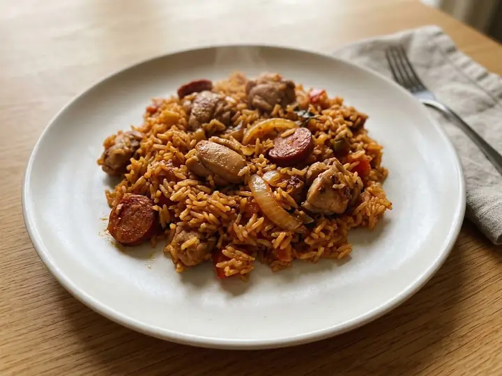

USA · Chicken · No. 031
Chicken & Chorizo Jambalaya
A single portion of American cooking, ready in 28 minutes with 8 minutes of prep. Written for one, so there is nothing to halve and nothing to waste. It brings some heat.
Spicy
Method
- 1
Dice the onion and pepper, and chop the garlic.
- 2
Heat a saucepan over medium heat and fry the chorizo for 2 minutes until it releases its oil, then add the chicken and brown for 3–4 minutes.
- 3
Add the onion, pepper and garlic, and cook for 3 minutes until softening.
- 4
Stir in the rice and Cajun seasoning, then add the chopped tomatoes and stock.
- 5
Bring to a simmer, cover and cook for 15–18 minutes, stirring occasionally, until the rice is tender and the liquid is absorbed.
Find more like this